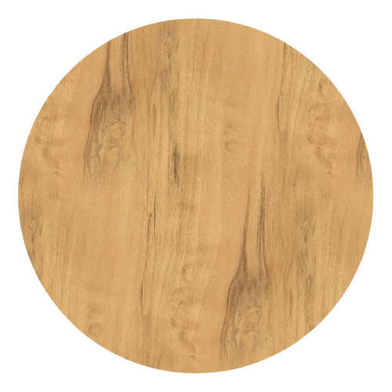
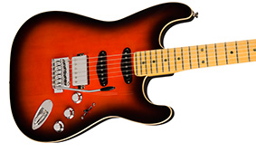
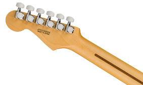
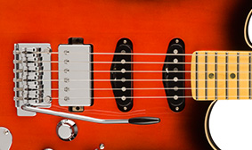

AERODYNE SPECIAL STRATOCASTER® HSS
Model #: 0252100343
COLOR

FINGERBOARD MATERIAL
€ 1,559.00
The Aerodyne Special Series offers a contemporary take on classic Fender® designs. Distinctive aerodynamic lines, custom voiced pickups, state-of-the-art hardware, dazzling finishes, and unmistakable silhouettes combine to create instruments that are pure, purposeful, instantly familiar and radically new.
The Aerodyne Special Stratocaster® HSS features a sleek new look with vibrant colors adorning the elegantly bound basswood body and the matching headcap. A modern “C” shape satin finished neck with 12” radius fingerboard ensures effortless playability, while newly designed vintage-voiced Stratocaster pickups mated to a specially voiced humbucking bridge pickup and a Babicz® Z-Series FCH-2 Point Tremolo deliver a perfect balance of high-performance and classic Fender tone.
The made-in-Japan Aerodyne Special Stratocaster® HSS inspires with futuristic style, premium appointments and exceptional tone. The bold and original designs that inspired generations live on in the Aerodyne Special series.
FEATURES
- Slim Aerodyne basswood body with bound carved top
- Maple neck with 12” radius maple or rosewood fingerboard
- Matching painted headcap
- Aerodyne Special pickups
- Babicz® FCH bridge
- Locking tuners
Highlights
SLIM AERODYNE BASSWOOD BODY WITH BOUND CARVED TOP
Basswood is a premium tonewood celebrated for its balance of clear highs, powerful midrange and warm lows. The body’s sleek “aerodynamic” contours add comfort and style.
MODERN “C”-SHAPED NECK WITH 12” FINGERBOARD RADIUS
The Modern “C” profile feels fast and smooth while the 12” radius makes big bends and speedy runs effortless.
NEW AERODYNE SPECIAL PICKUPS
The new Aerodyne Special pickups are designed to provide each model with full, articulate Fender tone.
Specs
Body
| Body | |
|---|---|
| Body Material | Basswood |
| Body Finish | Gloss Polyester |
| Body Shape | Stratocaster® |
| Body Binding | 1-Ply Cream |
Neck
| Neck | |
|---|---|
| Neck Material | Maple |
| Neck Shape | Modern "C" |
| Nut Width | 1.69" (43 mm) |
| Side Dots | White |
Accesories
| ACCESSORIES | |
|---|---|
| Case/Gig Bag | Deluxe Gig Bag |